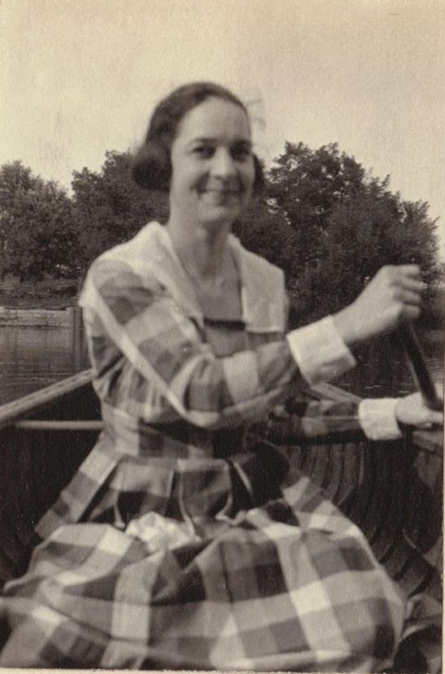

Ruth Montgomery, 03/271899 - 07/27/1980
This page is dedicated to all things found relating to Ruth Montgomery. She was the last of her surname in our family lines.
Go Back Montgomery Page
Go Back Home
- Ruth Montgomery Page in Clan Montgomery Database
This outlines the connection from Ruth Montgomery to myself.
| First Name |
Last Name |
Maiden Name |
| Ruth |
Sexton |
Montgomery |
| Mary |
Brooks |
Sexton |
| Daniel |
Brooks |
|
| Andrew |
Brooks |
|